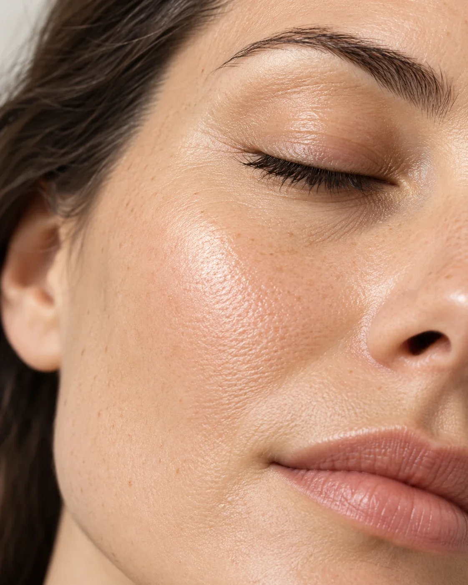

Лазерное омоложение и лазерная шлифовка в Нижнем Новгороде в «Бетта Клиника»: дарим коже вторую жизнь
В современном мире, где красота и молодость становятся всё более ценными аспектами жизни, процедуры лазерного омоложения и лазерной шлифовки в Нижнем Новгороде занимают особое место.
Эти процедуры основаны на использовании лазерного излучения для стимуляции выработки коллагена и эластина в коже, что способствует её обновлению и улучшению внешнего вида.
В Центре лазерной и врачебной косметологии «Бетта Клиника» Нижний Новгород представлены передовые технологии омоложения кожи. Для глубокого воздействия на коллагеновые волокна, сосудистую систему и пигментные образования разного уровня залегания используется неодимовый лазер Magic Super Full (Россия). Для более интенсивного обновления кожи применяется CO₂-лазер Cosmopulse II (Корея), который выполняет фракционную шлифовку и лазерное омоложение. Он сокращает морщины, разглаживает рубцы и выравнивает рельеф кожи.
Врач-косметолог Центра лазерной и врачебной косметологии «Бетта Клиника» Нижний Новгород выбирает лазерное омоложение или лазерную шлифовку, исходя из запроса пациента и качества кожи, перед этим проводится тщательный осмотр и сбор анамнеза. После проведенных процедур пациенту строго нужно соблюдать рекомендации врача-косметолога.

Что дает?
- 01Подтяжка овала лица
- 02Стимулирование естественного обновления клеток
- 03Уменьшение морщин
- 04Устранение сосудистых дефектов
- 05Удаление пигментации
- 06Коррекция рубцов